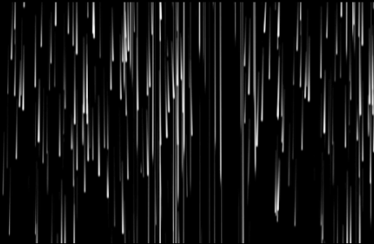

유연하고 끊임없이 변화하는 특성을 갖추어 자연의 흐름과 생명의 물결을 상징하는 강을
표현한 미디어아트이다. 삶도 변화와 선택의 연속이며, 유연함과 굳건함이 필요하고 새로운 경험에
대한 개방적인 태도가 중요하다. 이 작품은 관람객이 참여하면서 우리가 삶의 흐름에 따라 적응하고
변화하는 것을 상기시키며, 유연함이 주는 힘을 강조한다.
Media art, Beam projector
Working period - 3 weeks
Tool - After effect, Arduino, Arena, Processing
작품은 직선의 형태를 사용하여 불변성과 강인함을 강조하며, 빔프로젝터를 통해 직선을 벽에
비추어 공간 안에서 긍정적인 에너지와 결연한 의지를 전달한다. 빔의 각도나 세기를 조절하여
작품의 인상을 변화시킬 수 있지만, 핵심 메시지는 변하지 않는다. 이 작품은 관람자들에게 자신의
내면에서 힘을 찾고, 어떠한 어려움에도 굴하지 않고 단단하게 서있을 수 있도록 격려한다.
Media art, Beam projector
Working period - 3 weeks
Tool - After effect, Arduino, Arena, Processing
이 작품은 과도한 극단에 빠지지 않고, 균형과 조화를 찾는 것이 중요하다는 메시지를 전달한다.
작품과 조화롭게 공존하는 경험을 통해 균형과 조화를 찾는 과정을 체험할 수 있도록, 관람자가
작품의 중간에 위치하면, 작품이 나타나며 공존하는 순간을 경험한다. 관람자는 작품과 함께 자신의
위치와 상호작용하면서, 삶의 여러 측면에서 균형을 찾는 과정에 대한 깨달음을 얻을 수 있게 격려한다.
Media art, Beam projector
Working period - 3 weeks
Tool - After effect, Arduino, Arena, Processing